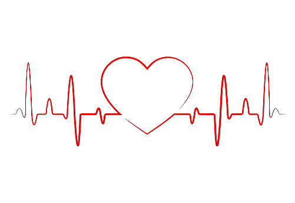

This is the most common type of blood donation, during which you donate about a pint (about half a liter) of whole blood. The blood is then separated into its components — red cells, plasma and sometimes platelets.
Learn More
Donating blood is very easy, simply search in google 'blood banks near me' to get started and help out the community. Every little helps. :)
How your donation helps
A blood transfusion may be needed if you have a shortage of red blood cells.
This may be because your body's not making enough red blood cells or because you have lost blood.
For example, you may need a blood transfusion if you have:
a condition that affects the way your red blood cells work – such as sickle cell disease or thalassaemia
a type of cancer or cancer treatment that can affect blood cells – including leukaemia, chemotherapy or stem cell transplants
severe bleeding – usually from surgery, childbirth or a serious accident
A blood transfusion can replace blood you have lost, or just replace the liquid or cells found in blood (such as red blood cells, plasma or cells called platelets).
Ask your doctor or nurse why they think you might need a transfusion if you're not sure.
More about blood transfusion
Basing your decisions on sound knowledge ensures you are able to make an informed choice about your care and treatment. All our resources are approved by the National Blood Transfusion Committee, and are updated regularly to give you the latest evidence and expert opinion.
Benifits of Donating
1. Giving blood can reveal potential health problems
While it isn’t the same thing as a trip to the doctor, donating blood can be another way to keep an eye on your cardiovascular health. You’ll receive a mini-physical prior to the blood draw, in which someone will check your pulse, blood pressure, body temperature, hemoglobin and more. This can sometimes shed light on issues you didn’t even know about.
Learn More
“If your blood is too low in iron, the clinic will tell you and won’t draw your blood”, says Jan Patenaude, dietician and certified LEAP therapist. They will also inform you of any other blood issues they notice or if anything seems unusual. An occasional check up on your blood quality could be the key to spotting a health issue before it becomes life-threatening.
Blood Donation Drive
Blood Donation Form
Engage
Young people are an important potential source of blood donors.
When adequately educated about the importance of blood donation
and the constant need for blood, they could go on to promote
healthy lifestyles within their community and help ensure a safe and
regular supply of blood for the future.
start education from a young age
conduct school and university visits, ensuring all blood donors meet the minimum
age criteria (in line with national standards)
provide adequate pre- and post-donation information
offer blood facility tours for students - where feasible
Education
create Pledge groups (as resources permit)
mobilise community partners and connect with community groups such as scouts
or sporting clubs to encourage blood donation among members
Networking
be active on social / electronic media channels, encourage sharing
use SMS / email reminders and send thank you messages
Targeted marketing
reinforce positive attitudes towards voluntary blood donation and healthy lifestyles
ensure a safe, pleasant and fun donation experience
encourage healthy competition
dispel fears and anxieties
organise donation events at locations / times that maximise youth attendance
encourage regular blood donation through regular contact

Why Blood?
Safe blood saves lives. Blood is needed by women with complications during pregnancy and childbirth, children with severe anaemia, often resulting from malaria or malnutrition, accident victims and surgical and cancer patients.
There is a constant need for a regular supply of blood because it can be stored only for a limited period of time before use. Regular blood donation by a sufficient number of healthy people is needed to ensure that blood will always be available whenever and wherever it is needed.
Blood is the most precious gift that anyone can give to another person – the gift of life. A decision to donate your blood can save a life, or even several if your blood is separated into its components – red cells, platelets and plasma – which can be used individually for patients with specific conditions.
Mission and Vision
Our Vision
Bringing Dignity to Life of people by making Quality blood and blood products available when needed.
A Centre of Excellence in Blood Banking, Committed to Safe and High Quality Blood for Thalassemia and Leukemia Children, free of cost , thereby enabling them an opportunity for a normal and holistic life, while canvassing Blood Donation, as only Voluntary, and, at all times, guided by principles of Compassion, Care and uncompromising adherence to Integrity.
MISSION
Being one of the preeminent and specialized Blood Centres
Aarohi Blood Bank operates under a 4 part mission:
1. To provide the high quality and safe blood and related blood products to children suffering from Thalassemia and Leukemia primarily in the Greater Hyderabad Municipality area.
2. To make blood donation 100% voluntary without any replacement donor by building individual or institutional alliances.
3. To create awareness about Thalassemia so that the incidence decreases over time.
4. To motivate and train the next generation youth leaders to ensure sustainability of the mission of Voluntary Blood Donation.